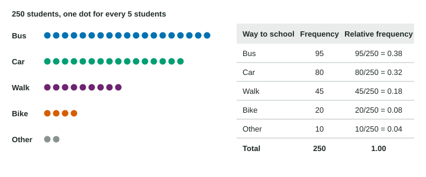

A categorical variable sorts individuals into groups. The first way to summarize it is to count: how many individuals are in each group? This page shows how to turn those counts into a frequency table, how to turn the counts into relative frequencies, and what a sample proportion is.
Frequency tables
A frequency table lists each category of a categorical variable with its frequency, the number of individuals in that category. The frequencies add to the total number of individuals, as long as each individual is in exactly one category.
For example, a random sample of 160 adults named their main source of news: 56 social media, 40 television, 36 news websites, 16 radio and 12 print newspapers. Those five counts are the frequencies, and they add to 160.
Relative frequencies
Counts are hard to compare between groups of different sizes. Forty television viewers out of 160 adults is a large share; forty out of 5,000 is tiny. So divide each count by the total. The result is the relative frequency:

Build the relative frequency table. Use the 160 adults above.
| News source | Frequency | Relative frequency |
|---|---|---|
| Social media | 56 | |
| Television | 40 | |
| News websites | 36 | |
| Radio | 16 | |
| Print newspaper | 12 | |
| Total | 160 | 1.000 |
Check:
Three facts follow from the division:
- Every relative frequency is between 0 and 1 (between 0% and 100%).
- When each individual is in exactly one category, the relative frequencies add to 1. A "check every one that applies" question breaks this: one person can sit in several categories, so the sum can be more than 1.
- To get a count back, multiply: count = relative frequency × total. A relative frequency of 0.42 among 400 donors is donors. Without the total you cannot recover the counts.
A missing relative frequency can be found from the others, because they add to 1. If the blood types O, A and B have relative frequencies 0.44, 0.42 and 0.10, then type AB has
Sample proportion and population proportion
When the data come from a sample, the relative frequency of a category has a name: the sample proportion, written and read "p-hat".
Here is the sample size. For television, . The sample proportion is a statistic.
The same quantity for the whole population is the population proportion, written : the part of every adult in the city whose main source is television. It is a parameter, usually unknown, and estimates it. The hat is a reminder that is an estimate built from a sample.
| Sample proportion | Population proportion | |
|---|---|---|
| Symbol | ||
| Describes | the sample | the whole population |
| Kind of number | statistic | parameter |
| Known? | yes, computed from data | usually not |
Comparing groups fairly
A second blood bank had 250 donors, 30 with type B. The first had 400 donors, 40 with type B. The counts suggest the first bank, but the relative frequencies say otherwise: against . Whenever groups have different sizes, compare relative frequencies, and say which is larger in context: "a larger proportion of the second bank’s donors had type B blood."